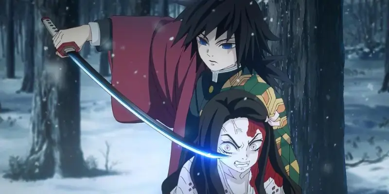

Sua Jornada O ano é o Período Taishō. Sua família foi massacrada por um demônio, e sua irmã mais nova se transformou em um demonio. Você é encontrado por um misterioso espadachim do Demon Slayer Corps.Você grita para o espadachim parar, implorando para que ele não ataque sua irmã, que ainda tem a essência de sua família dentro de si.